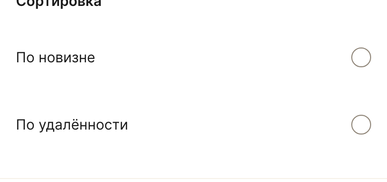
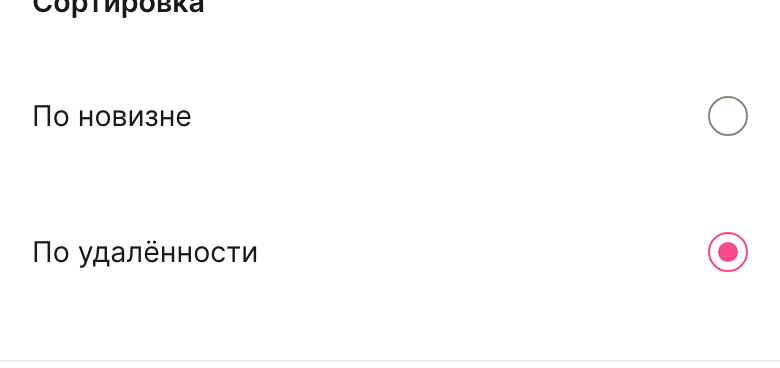
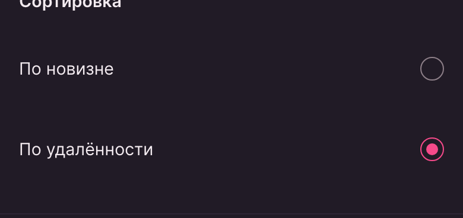
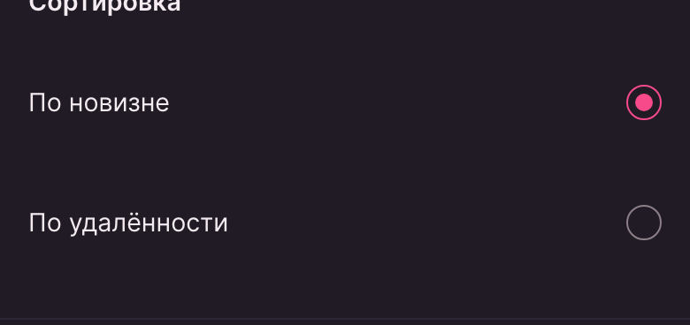

LOVII · lovii-app · киты и токены
Радиокнопки «Сортировка» и «Упорядочить» были не видны так же, как чекбоксы: пустой кружок рисовался цветом разделителя строк — контраст 1.13:1 к фону карточки при пороге 3:1. Сделан парный к чекбоксу компонент кита и применён к фильтрам.
В фильтрах каталога четыре радиостроки: две на сортировку и две на порядок. У невыбранной опции кружок практически не читался на белой карточке, а в тёмной теме — на тёмной. Отличить «не выбрано» от «выбрано» без нажатия было почти нельзя.
| Тема | Цвет рамки | Контраст | Порог |
|---|---|---|---|
| Светлая | rgb(246,241,232) | 1.13 : 1 | 3 : 1 |
| Тёмная | rgb(46,37,53) | 1.15 : 1 | 3 : 1 |
Локальный span.radio брал рамку из --border-normal-subtle — а это --lv-line-2, цвет разделителя строк внутри карточки. Токен существует, но назначен не по смыслу: для границы контрола он слишком бледный. У чекбоксов была родственная, но другая ошибка — ссылка на несуществующий токен.
/* CatalogFilters.vue — было */ .radio { width: 18px; height: 18px; border-radius: 50%; border: 1.5px solid var(--border-normal-subtle); /* = --lv-line-2, разделитель строк */ background: transparent; }
Правильный токен для видимой границы контрола уже появился — --border-normal-strong (светлая 3.6:1, тёмная 4.4:1). Радиокнопка просто осталась последним местом, где его не использовали.
Добавлен китовый AppRadio — пара к AppCheckbox: тот же размер бокса, та же рамка и те же состояния. Выбранная опция — брендовый контур с точкой 10px внутри. Группа задаётся общим пропом name; реальный input[type=radio] остаётся в разметке, поэтому навигация стрелками, скринридеры и тестовые id работают как раньше.




| Состояние | Рамка | Точка |
|---|---|---|
| Светлая, не выбрано | rgb(143,133,120) | не показана |
| Тёмная, не выбрано | rgb(141,127,136) | не показана |
| Выбрано, обе темы | rgb(246,74,138) | rgb(246,74,138), scale 1 |
| Шаг | Результат |
|---|---|
| Юнит-тесты | 702 / 702 (90 файлов), +8 на AppRadio |
| Типы · линт · сборка | vue-tsc · eslint · vite build — чисто |
Локальные стили .radio и .filter-row из фильтров удалены: чекбоксы и радиокнопки теперь на одном компонентном стандарте и одном классе строки. Правка лежит в рабочей копии рядом с параллельной работой по профилю; в ветку не отправлялась.